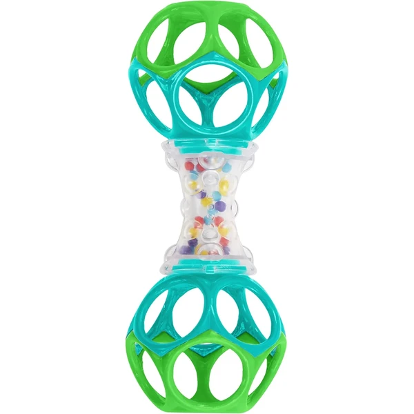
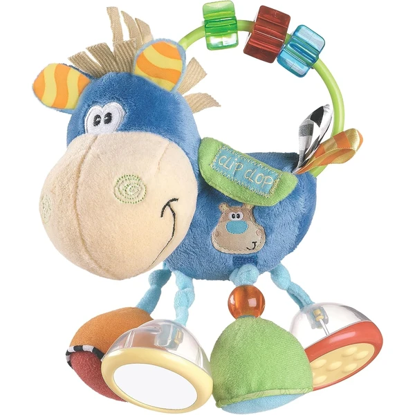
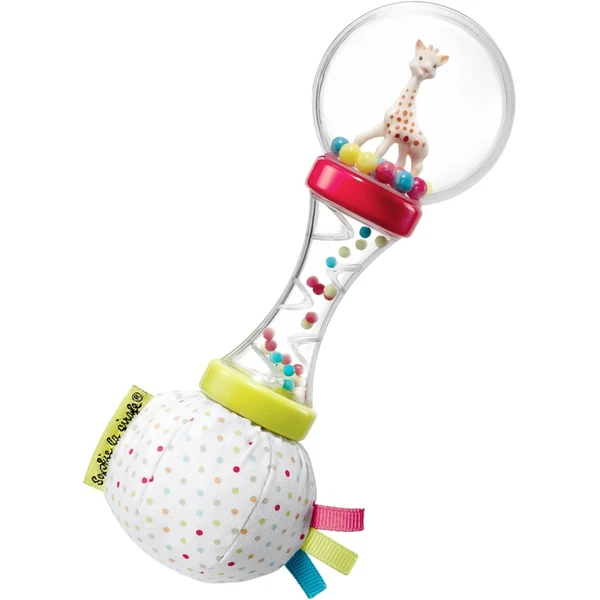
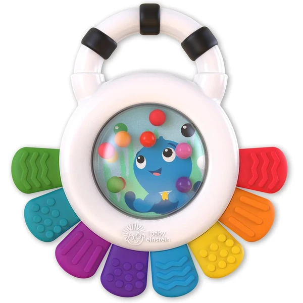
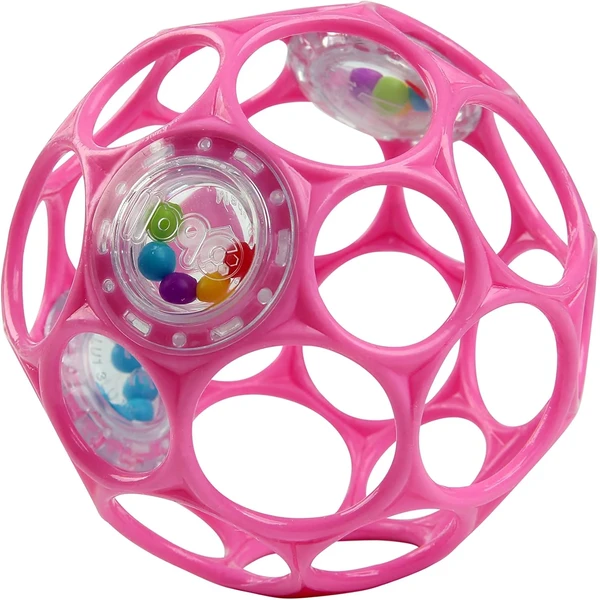
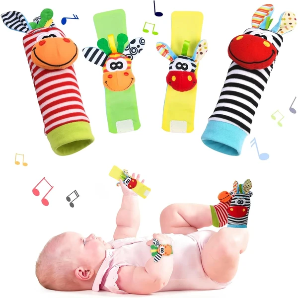

El sonajero sigue acompañando al bebé entre los 6 y los 12 meses, ahora con un agarre más firme y la capacidad de pasarlo de una mano a otra. Descubrir que puede controlar el sonido moviéndolo a su antojo le da mucha satisfacción. Los hay de tela, madera o plástico, siempre con un tamaño adecuado a sus manos. En esta selección encontrarás sonajeros pensados para esta edad.
¿Qué desarrollan los sonajeros?
En esta etapa el bebé ya controla mejor el sonajero, lo que refuerza su coordinación y su relación de causa y efecto.
- Coordinación mano-ojo
- Motricidad fina
- Estimulación auditiva
- Relación causa-efecto
- Cambio de manos
- Curiosidad

Bright Starts Sonajero Oball Easy Grasp
Un sonajero con dos mini Oball flexibles fáciles de morder y agarrar, con cuentas de colores que suenan al agitarlo. Diseño transparente para que el bebé vea las cuentas mientras juega.
⭐ ¿Por qué nos gusta?
- ✔ Dos mini Oball flexibles, fáciles de agarrar.
- ✔ Cuentas de colores visibles a través del sonajero.
- ✔ Apto desde recién nacido.
💬 Lo que más destacan las familias
Muchos padres coinciden en que es uno de los primeros sonajeros que el bebé consigue sujetar solo, gracias al diseño Oball. El sonido de las cuentas también resulta muy efectivo para captar su atención.
Ver en Amazon

Playgro Sonajero Multiactividades Caballo
Un caballito de peluche con 4 patas sonoras, espejo integrado y un bolsillo con velcro para sorprender al bebé. Combina distintas texturas y sonidos en un solo juguete multiactividades.
⭐ ¿Por qué nos gusta?
- ✔ 4 patas sonoras y espejo integrado.
- ✔ Bolsillo con velcro para descubrir sorpresas.
- ✔ Combina texturas, sonidos y colores.
💬 Lo que más destacan las familias
Entre los comentarios más habituales aparece lo entretenido que resulta gracias a la variedad de estímulos: sonido, espejo y texturas en un mismo juguete. El asa en forma de anillo también se valora para llevarlo a cualquier parte.
Ver en Amazon

Sophie la Girafe Sonajero Soft Maracas
Un sonajero que combina tres sonidos distintos: bolitas tipo maracas, un palo de lluvia suave y un papel arrugado para estrujar. Asa ergonómica pensada para las manitas del bebé desde los 3 meses.
⭐ ¿Por qué nos gusta?
- ✔ Tres sonidos distintos en un solo juguete.
- ✔ Asa ergonómica adaptada a manos pequeñas.
- ✔ De la marca Sophie la Girafe, desde 1961.
💬 Lo que más destacan las familias
Lo que más suele gustar es la variedad de sonidos que ofrece, desde las maracas hasta el papel arrugado, manteniendo el interés del bebé. La calidad de los materiales también se valora, como es habitual en esta marca.
Ver en Amazon

Baby Einstein Outstanding Opus Sensorik
Un anillo de dentición multisensorial con 8 texturas distintas para tocar y morder, además de cuentas sonajero de colores. Se puede refrigerar para aliviar las encías doloridas durante la dentición.
⭐ ¿Por qué nos gusta?
- ✔ 8 texturas distintas para tocar y morder.
- ✔ Se puede refrigerar para aliviar las encías.
- ✔ Mango fácil de agarrar para manos pequeñas.
💬 Lo que más destacan las familias
Se repite bastante el comentario de que resulta muy útil durante la dentición, gracias a que se puede meter en la nevera. La combinación de texturas también se valora porque mantiene entretenido al bebé más tiempo.
Ver en Amazon

Bright Starts Oball Pelota Sonajero
Una pelota con 3 sonajeros internos y los característicos agujeros Oball que facilitan que el bebé la sujete desde los primeros meses. Se puede aplastar y siempre recupera su forma original.
⭐ ¿Por qué nos gusta?
- ✔ 3 sonajeros internos, distintos sonidos.
- ✔ Agujeros Oball, fácil de agarrar para el bebé.
- ✔ Recupera su forma tras aplastarla.
💬 Lo que más destacan las familias
Una característica muy mencionada es lo fácil que resulta para el bebé sujetarla desde muy pequeño, gracias al diseño con agujeros. Es un clásico que se repite en muchas listas de regalo por su sencillez y buen funcionamiento.
Ver en Amazon

Vicloon Sonajero Calcetines y Muñequeras
Un set de 4 piezas con dos sonajeros de muñeca y dos calcetines sonajero para los pies, con forma de animalitos de peluche suave. Pensado para que el bebé descubra el sonido a través del movimiento de sus propias manos y pies.
⭐ ¿Por qué nos gusta?
- ✔ Set de 4 piezas: muñequeras y calcetines.
- ✔ Material suave de felpa, cómodo para el bebé.
- ✔ Ayuda a descubrir el movimiento de manos y pies.
💬 Lo que más destacan las familias
Muchos padres destacan lo curioso que resulta ver al bebé descubrir que el sonido viene de sus propios movimientos. El material suave también se valora por lo cómodo que resulta llevarlo puesto.
Ver en Amazon

Bright Starts Set Regalo Grasp The Day
Un pack de regalo con dos juguetes Oball clásicos: una pelota y un sonajero con forma de pesa, ambos con la tecnología de fácil agarre. Pensado para llevar de viaje y fomentar la motricidad fina.
⭐ ¿Por qué nos gusta?
- ✔ Incluye pelota y sonajero en un solo pack.
- ✔ Tecnología Oball de fácil agarre.
- ✔ Tamaño compacto, fácil de llevar de viaje.
💬 Lo que más destacan las familias
Lo que más suele gustar es tener dos juguetes distintos en un mismo pack, ideal como regalo completo. El diseño de fácil agarre se repite como uno de los puntos fuertes de toda la gama Oball.
Ver en Amazon